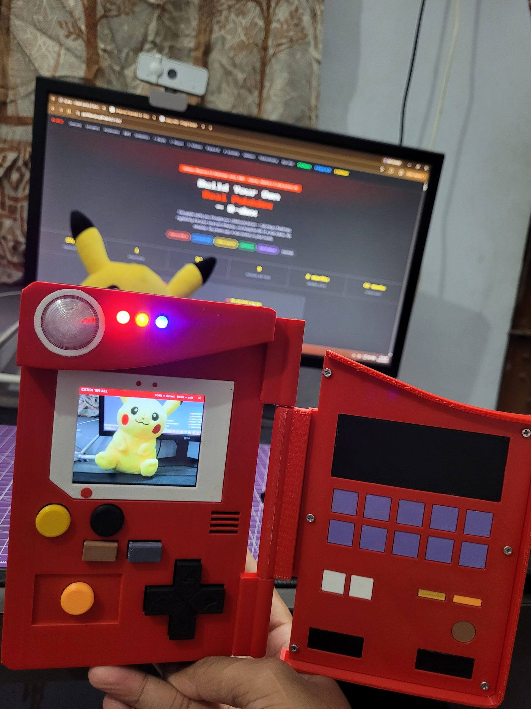
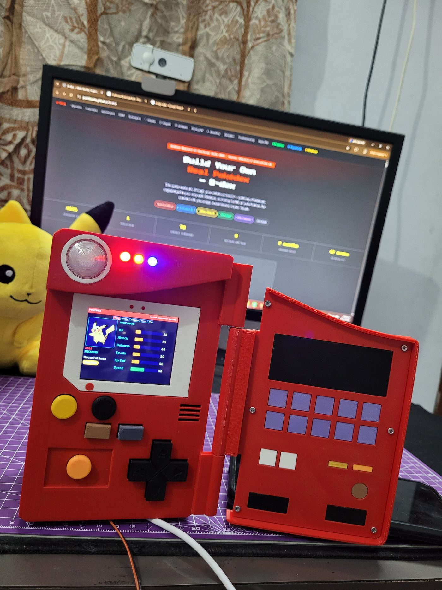
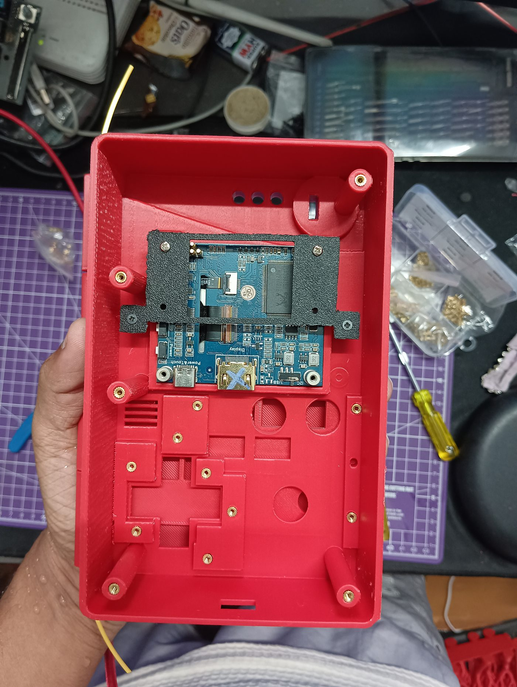

Contents
- What Q-dex Is
- Why We Built It This Way
- System Architecture
- Bill of Materials
- Circuit Schematics
- Phase 1 — Display Bring-Up
- Phase 2 — Keypad & Serial Link
- Phase 3 — Software Stack
- The Physical AI — On-Device Intelligence
- Phase 4 — Print & Assembly
- Validation & Test Results
- Troubleshooting Reference
- Replication Checklist
What Q-dex Is
Q-dex is a real, handheld Pokédex — not a simulation, not a phone app. Point it at a Pokémon card or figure, press SCAN, and an on-device neural network identifies it, registers it to your trainer profile, awards XP, and unlocks badges. Press OAK and ask a question out loud; Professor Oak answers back in his own voice.
It runs a full 1025-Pokémon database, multi-trainer profiles, and an XP & badge system spanning 9 regions — all inside a 3D-printed Gen-1 Kanto enclosure that opens and closes on a real hinge.
Display Layer
Waveshare 2.8" HDMI IPS driven directly off the UNO Q's HDMI-out. Zero driver work.
Input Layer
ESP32-C3 satellite MCU polls 9 buttons and streams events over USB serial.
Intelligence Layer
MobileNetV2 vision + whisper.cpp speech, both running locally on the UNO Q.
Physical Layer
Fusion 360 enclosure: hinged lid, flush button caps, dome lens, press-fit inserts.
Anyone who wants to build their own Pokédex and has basic soldering and electronics skills. Every command is copy-pasteable. Every phase ends with a verification checkpoint so you know it works before moving on — no debugging four problems at once.
Why We Built It This Way
Three design decisions define this project. Each solves a real constraint rather than following the obvious path.
Decision 1 — Split the workload: one processor, one controller
The Arduino UNO Q is a Linux board. Linux is not real-time: polling GPIO from Python means missed button presses whenever the scheduler is busy running inference. So the UNO Q does zero GPIO. An ESP32-C3 Super Mini polls all 9 buttons at a steady 50 Hz and streams a keyword per press over USB serial. The UNO Q reads those events in a daemon thread and drops them into a queue.
Result: button response stays crisp even while the neural network is running. This is the single most important architectural choice in the build.
Decision 2 — Two recognition paths: on-device AND cloud
Q-dex identifies Pokémon two ways, and keeping both is deliberate. The Reverse Image Version uploads the camera photo and queries Google Lens (via SerpAPI) — powerful, covering all 1025 Pokémon, but it needs an internet connection. The PhyAI Challenge runs our own MobileNetV2 vision model (via ai_edge_litert) entirely on the UNO Q — only four Pokémon so far, but no connection, no latency, no per-use cost. The speech model (whisper.cpp, tiny.en) for Professor Oak also runs locally.
The cloud path gives breadth; the on-device path gives independence and proves the "Physical AI" concept — intelligence computed on the device itself. Having both means the Pokédex is powerful when online and still useful in a cave.
Decision 3 — Make the enclosure a functional part, not a shell
The lid geometry is dimensioned against the button caps: caps sit at z=−3.7 mm, exactly 0.3 mm proud of the recessed panel field at z=−4.0 mm. When the lid rotates 180° closed, the LidFacePlate clears every cap by that 0.3 mm. Six mounting bosses were shortened specifically to make this clearance work. The enclosure closes like the real thing because the CAD was solved as an interference problem, not styled as a box.
This split-workload pattern generalises: any Linux SBC project needing responsive physical input benefits from offloading GPIO to a cheap MCU over serial. The ESP32-C3 Super Mini costs under ₹250 and eliminates an entire class of latency bugs.
System Architecture
Full system block diagram showing every subsystem, interface, and data direction.
Runtime data flow — the SCAN action
Pressing SCAN can take one of two paths, depending on which mode you are in — and this split is the core of the project. Both start the same way (a button byte from the ESP32 reaches the app), then diverge:
Path 1 — Reverse Image Version (cloud, all 1025 Pokémon)


Path 2 — PhyAI Challenge (on-device, offline)
Both paths run their heavy work in a worker thread, so the event loop keeps rendering a scan animation and never blocks. The reverse-image path is the primary one and advances trainer progress; the on-device path is a demonstration of true Physical AI.
Bill of Materials
Every component needed for one complete Q-dex. Prices are the actual INR retail prices paid (Robu.in / Zbotic / Amazon India, 2026) with product links where available. Prices will vary over time — treat them as a real-world budgeting guide.
A · Core Electronics
| # | Component | Spec / Part | Qty | ~₹ | Link |
|---|---|---|---|---|---|
| A1 | Arduino UNO Q | 4 GB RAM / 32 GB eMMC, Linux SBC (ABX00173) | 1 | 9,039 | robu.in |
| A2 | Waveshare 2.8" HDMI IPS LCD | 640×480 IPS, HDMI + USB touch | 1 | 5,039 | robu.in |
| A3 | ESP32-C3 Super Mini | RISC-V, USB-C — the keypad controller | 1 | 300 | local / online |
| A4 | USB Camera (OV5693 5MP) | USB UVC, auto-focus (fixed-focus also works) | 1 | 2,718 | zbotic.in |
| A5 | USB Sound Card | 5.1-channel USB audio (mic + speaker on one dongle) | 1 | ~350 | robu.in |
| A6 | PAM8403 Amplifier | Class-D 3W+3W audio amp for the speaker | 1 | ~80 | local / online |
| A7 | Speaker 8Ω | Small driver for Professor Oak's voice | 1 | ~120 | local / online |
| A8 | USB Hub (multiport) | Zebronics Type-C multiport — feeds camera, sound, ESP32 | 1–2 | ~1,200 | amazon.in |
B · Passives, LEDs & Wiring
| # | Component | Spec | Qty | Notes |
|---|---|---|---|---|
| B1 | Tactile Push Buttons | 6×6 mm, 4-pin THT | 9 | 4 D-pad + 5 action buttons. Wired directly to ESP32 GPIO. |
| B2 | Indicator LEDs | Red, Yellow, Blue (5 mm) | 3 | Top status lights, like the real Pokédex. On the 5 V rail. |
| B3 | WS2812 (NeoPixel) | Single addressable RGB LED | 1 | The lens LED — blinks teal (0,128,128) when Oak / Q-dex speaks. On GPIO 21. |
| B4 | Resistors 1 kΩ | ¼ W | 3 | One per indicator LED. |
| B5 | HDMI → HDMI Cable | Short, flexible | 1 | UNO Q HDMI-out to the display. Keep it short (see note). |
| B6 | USB-C → USB-C Cable | For power | 1 | Power into the UNO Q. |
| B7 | Hookup Wire + Heat-shrink | Assorted | — | Flexible wire matters inside a hinged shell. |
The buttons are wired directly to the ESP32-C3 GPIOs (active-low, using the chip's internal pull-ups). A series capacitor and a 1N4148 diode per line are recommended for cleaner debounce and protection, but this build does not use them and works fine without. For a tidier future version, a 3×3 button matrix would need fewer GPIO pins — if a custom PCB is ever made for this, that is the way to go.
The three indicator LEDs are wired directly to the 5 V rail and ground (the same rail feeding the PAM8403 amp), not through the ESP32 — driving them from the board was power-hungry enough to cause restarts. One side effect: without a smoothing capacitor the indicator LEDs flicker slightly when the WS2812 or audio is active. A capacitor across the rail fixes the flicker.
C · Mechanical & 3D-Printed
| # | Part / Item | Material / Spec | Notes |
|---|---|---|---|
| C1 | Enclosure parts | PLA (Red shell) | Tub, backplate, lid, bezel, button caps, D-pad, mounts. 0.20 mm layers. |
| C2 | Dome Lens | PETG — Clear | Printed in clear PETG for the light-up lens; everything else is PLA. |
| C3 | Brass heat-set inserts | M2 and M3 | Melted into the plastic for screw threads. |
| C4 | Screws | M2×3, M2×6, M2×8 | Sizes to match your inserts and boss depths. |
| C5 | Hinge | No separate hinge pin | The hinge is part of the printed geometry — no metal pin needed. |
| C6 | Tools | Screwdriver set, soldering iron | The ESP32 + keypad wiring requires soldering. |
The three big-ticket items dominate the cost: the Arduino UNO Q (₹9,039), the Waveshare 2.8" display (₹5,039), and the OV5693 camera (₹2,718). Everything else — ESP32-C3 (₹300), sound card, amp, speaker, LEDs, resistors, cables, hub, print material, inserts and screws — adds roughly ₹2,000–2,500 more. A realistic all-in figure is around ₹19,000–20,000, most of it in those three core parts.
Circuit Schematics
There are two parts to the wiring: the ESP32-C3 side (9 buttons wired directly to GPIO, plus the WS2812 lens LED), and the USB/HDMI interconnect on the UNO Q. Both are given here at pin level.
5.1 — ESP32-C3 keypad schematic
Each button connects its GPIO pin to GND. The firmware enables the ESP32's internal pull-up, so an unpressed button reads HIGH and a pressed button reads LOW (active-low). The firmware debounces each press in software (a short delay after a press). A small capacitor across each button would suppress bounce in hardware too, but this build relies on the firmware debounce and does not use them.
Pin assignment table
This is the exact mapping from the firmware (keypad_led.ino). Each button connects its GPIO to GND; the ESP32's internal pull-ups make them active-low, so they need INPUT_PULLUP — no external resistors. On each press the ESP32 prints a keyword over USB serial, which the app maps to an action.
| # | Button | GPIO | Serial keyword | App action |
|---|---|---|---|---|
| 1 | Select | GPIO 0 | enter | Confirm / select |
| 2 | Back | GPIO 1 | cancel | Go back |
| 3 | Tab | GPIO 2 | tab | Switch tab / region |
| 4 | Up | GPIO 3 | up | Navigate up |
| 5 | Down | GPIO 4 | down | Navigate down |
| 6 | Right | GPIO 5 | right | Navigate right |
| 7 | Left | GPIO 6 | left | Navigate left |
| 8 | Scan | GPIO 7 | pageleft | Trigger a scan |
| 9 | Mute | GPIO 10 | pageright | Mute / stop audio mid-sentence |
The lens LED (WS2812)
| Item | GPIO | Wiring | Behaviour |
|---|---|---|---|
| WS2812 (NeoPixel) — the lens LED | GPIO 21 | DIN → GPIO 21, VCC → 5 V, GND → GND | Blinks teal (0, 128, 128) at 250 ms while Professor Oak or Q-dex is speaking. The app sends '1' to start blinking and '0' to stop. |
GPIO 21 now drives the WS2812 LED — do not put a button there. GPIO 2 is a strapping pin; it is used here for the "tab" button and works, but do not move the LED onto it. Also: because the three indicator LEDs share the 5 V rail without a smoothing capacitor, they flicker slightly when the WS2812 or audio is active — a capacitor across the rail removes the flicker.
This ESP32 + keypad wiring requires soldering. The full firmware is in the repo as keypad_led.ino — flash it to the ESP32-C3 (see Phase 2).
5.2 — UNO Q interconnect
No soldering here — this is the cable map. Getting it wrong is the most common bring-up failure.
| From | Interface | To | Enumerates As | Power Source |
|---|---|---|---|---|
| UNO Q HDMI-out | HDMI | Waveshare 2.8" LCD | /dev/fb0 | Display micro-USB → hub |
| Powered hub | USB 2.0 | USB Camera | /dev/video0 | Hub external supply |
| Powered hub | USB 2.0 | USB Sound Card | plughw:1,0 | Hub external supply |
| UNO Q USB-A | USB 2.0 | ESP32-C3 Super Mini | /dev/ttyACM0 | UNO Q (low draw, safe) |
| UNO Q USB-A | USB 2.0 | Powered hub uplink | — | Data only |
| 5 V 3 A adapter | USB-C | UNO Q power in | — | Mains |
Phase 0 — First Boot & Setup
The Arduino UNO Q ships with Ubuntu already installed — it is a full Linux single-board computer, not a bare microcontroller. So there is no OS to flash; you just need to boot it, connect it to your network, and get terminal access. Do this once, at the start, and every later phase talks to the board over SSH.
Step 1 — First boot like any SBC
For the very first setup, treat the UNO Q like a desktop: connect a monitor (HDMI), a USB keyboard and mouse, and power (5 V 3 A USB-C). It boots straight into the Ubuntu desktop.
After the network is set up, everything is done remotely over SSH from your laptop — the board can run "headless" (no monitor, keyboard or mouse attached). The screen and keypad you wire up in later phases are the Pokédex's display and buttons, not for driving Linux.
Step 2 — Connect to Wi-Fi
Use the Ubuntu desktop's Wi-Fi menu (top-right) to join your network, or from a terminal:
# List nearby networks nmcli device wifi list # Join yours (use your network name and password) nmcli device wifi connect "YOUR_WIFI_NAME" password "YOUR_WIFI_PASSWORD"
A handheld device moves around, and 2.4 GHz reaches further than 5 GHz. If your router shows both, join the 2.4 GHz one for a more stable connection.
Step 3 — Find the board's IP address
hostname -I
The first address it prints (for example 192.168.1.56) is the board's address on your network. Write it down — you use it to connect from your laptop.
Step 4 — Connect from your laptop over SSH
From here on you can unplug the monitor, keyboard and mouse and work entirely from your laptop. On Windows, MobaXterm is a free, friendly SSH client (macOS and Linux can use the built-in ssh command). Start a new SSH session to the board's IP, logging in as the arduino user:
ssh arduino@192.168.1.56 # use YOUR board's IP
The default user is arduino. You will be asked for its password on first connect. MobaXterm also gives you drag-and-drop file transfer and X11 forwarding, which is handy when the physical display is not connected yet.
- UNO Q boots to the Ubuntu desktop
- Board is connected to Wi-Fi (preferably 2.4 GHz)
- hostname -I shows the board's IP
- You can SSH in from your laptop and land at the arduino@ prompt
Phase 1 — Display Bring-Up
Goal: get a pygame window rendering on the Waveshare panel. Nothing else is connected yet — resist the temptation to plug everything in at once.
- 1Connect HDMI
HDMI end into the UNO Q's HDMI-out, full HDMI end into the Waveshare input. Use the 30 cm cable — longer cables will not route cleanly inside the shell later.
- 2Power the display separately
The Waveshare panel takes power over its own micro-USB port. Run it from the powered hub, not from the UNO Q, so display current never competes with the camera.
- 3Power the UNO Q
5 V 3 A USB-C adapter. Wait for full boot, then SSH in over your network.
Verify the framebuffer
# Framebuffer device should exist ls -l /dev/fb0 # Confirm the resolution the panel negotiated cat /sys/class/graphics/fb0/virtual_size # expect: 640,480 # Confirm the kernel sees an HDMI connection cat /sys/class/drm/*/status | head # expect at least one: connected
Rotate the display
The Waveshare 2.8" panel comes up in vertical (portrait) orientation, but the Pokédex layout is landscape. Rotate it left so the image is the right way up in the shell:
# Rotate the connected display left (temporary, for testing) DISPLAY=:0 xrandr --output HDMI-1 --rotate left # (your output name may differ — run 'DISPLAY=:0 xrandr' to list it)
To make the rotation permanent it is set in the display manager's startup script, so the panel is always landscape from boot.
Even before any image appears, the display's backlight should switch on when it has power — a faint even glow across the panel. If the backlight is on but you see no image, the problem is the HDMI signal or rotation, not a dead panel. If the backlight is off entirely, fix the display's own USB power before touching anything else. (One of our panels failed with frozen blue bands — a genuinely dead display looks different from a signal problem.)
Render a test frame
import os
os.environ["SDL_VIDEODRIVER"] = "fbcon"
os.environ["SDL_FBDEV"] = "/dev/fb0"
import pygame
pygame.init()
screen = pygame.display.set_mode((640, 480))
screen.fill((204, 0, 0)) # Pokedex red
font = pygame.font.SysFont(None, 42)
label = font.render("Q-DEX ONLINE", True, (255, 255, 255))
rect = label.get_rect(center=(320, 240))
screen.blit(label, rect)
pygame.display.flip()
pygame.time.wait(4000)
pygame.quit()
Run it with python3 screen_test.py. The environment variables must be set before import pygame — SDL reads them at import time, so setting them afterwards silently does nothing.
- /dev/fb0 exists
- Reported resolution is 640×480
- Red screen with white text appears on the Waveshare panel
- Text is centred and not clipped at any edge
Check the display's own micro-USB power first — the HDMI cable carries no meaningful power to the panel. A panel with signal but no power looks identical to a dead HDMI link.
Phase 2 — Keypad & Serial Link
Now build the input layer. The ESP32-C3 is flashed once and then never touched again — all application logic lives on the UNO Q.
7.1 — Firmware
The ESP32-C3 is flashed once and then never touched again — all application logic lives on the UNO Q. I flashed it using the Arduino IDE from my laptop (not from the UNO Q): connect the ESP32-C3 to the laptop over USB-C, select the board ESP32C3 Dev Module, and before flashing set Tools → USB CDC On Boot → Enabled and install the Adafruit NeoPixel library. The firmware does two jobs: read the 9 buttons and drive the WS2812 lens LED.
The ESP32-C3 Super Mini sometimes needs to be put into bootloader mode by hand. Do this: hold the BOOT button, press and release RESET, then click Upload in the IDE. The moment you see "Connecting…" / "Uploading…" begin, release BOOT. If it still fails, drop the upload speed to 115200. This is the single most common ESP32-C3 flashing snag.
The complete firmware is in the repo as keypad_led.ino — the current version, with the LED support. It sends a keyword (like enter or cancel) over USB serial on each press, and blinks the WS2812 teal while audio plays:
#include <Adafruit_NeoPixel.h>
const int NUM_BTN = 9;
int btnPins[NUM_BTN] = {0, 1, 2, 3, 4, 5, 6, 7, 10};
const char* btnKeys[NUM_BTN] = {
"enter", // GPIO 0 - SELECT
"cancel", // GPIO 1 - BACK
"tab", // GPIO 2 - TAB
"up", // GPIO 3
"down", // GPIO 4
"right", // GPIO 5
"left", // GPIO 6
"pageleft", // GPIO 7 - SCAN
"pageright" // GPIO 10 - MUTE
};
bool lastState[NUM_BTN];
// ---- WS2812 LED ----
#define LED_PIN 21
#define LED_COUNT 1
Adafruit_NeoPixel led(LED_COUNT, LED_PIN, NEO_GRB + NEO_KHZ800);
bool audioActive = false; // set by shimi's '1'/'0' bytes
bool blinkOn = false;
unsigned long lastBlink = 0;
const unsigned long BLINK_MS = 250;
void setup() {
Serial.begin(115200);
for (int i = 0; i < NUM_BTN; i++) {
pinMode(btnPins[i], INPUT_PULLUP);
lastState[i] = HIGH;
}
led.begin();
led.setBrightness(120);
led.show();
}
void loop() {
// ---- read audio on/off signal from the UNO Q ----
while (Serial.available() > 0) {
char c = Serial.read();
if (c == '1') {
audioActive = true;
} else if (c == '0') {
audioActive = false;
blinkOn = false;
led.setPixelColor(0, 0, 0, 0);
led.show();
}
}
// ---- blink teal while audio is active ----
if (audioActive) {
unsigned long now = millis();
if (now - lastBlink >= BLINK_MS) {
lastBlink = now;
blinkOn = !blinkOn;
if (blinkOn) led.setPixelColor(0, 0, 128, 128); // teal
else led.setPixelColor(0, 0, 0, 0);
led.show();
}
}
// ---- keypad ----
for (int i = 0; i < NUM_BTN; i++) {
bool state = digitalRead(btnPins[i]);
if (lastState[i] == HIGH && state == LOW) {
Serial.println(btnKeys[i]);
delay(50); // debounce
}
lastState[i] = state;
}
delay(10);
}
Why active-low
The ESP32-C3's internal pull-ups are far more reliable than its pull-downs, and wiring every switch common to a single GND rail means one shared wire instead of nine separate returns. Inside a hinged enclosure with limited wire space, that difference matters.
7.2 — Host-side serial reader
On the UNO Q, a daemon thread owns the serial port and pushes decoded events into a queue. The pygame loop drains that queue each frame. The read never blocks rendering.
In this build that reader is key_serial.py, run alongside the app. The firmware sends a whole keyword per line (like enter or up), so the reader reads lines, not single bytes. It maps each keyword to an action the app understands and hands it over. Here is a simplified version of the idea:
"""Keypad bridge: read keyword lines from the ESP32-C3 over USB serial."""
import serial
# The firmware prints one of these words per button press
KEY_MAP = {
"enter": "SELECT", "cancel": "BACK", "tab": "TAB",
"up": "UP", "down": "DOWN", "left": "LEFT", "right": "RIGHT",
"pageleft": "SCAN", "pageright": "MUTE",
}
ser = serial.Serial('/dev/ttyACM0', 115200, timeout=0.1)
while True:
line = ser.readline().decode(errors="ignore").strip()
if line in KEY_MAP:
action = KEY_MAP[line]
# hand this action to the app (e.g. write to a pipe / inject a key event)
deliver(action)
key_serial.py also works the other way: when the app is speaking it sends a '1' (start) or '0' (stop) byte back to the ESP32 so the lens LED blinks in time with the voice. Reading whole lines and reconnecting on a serial error (common after a USB power blip) keeps the input responsive without crashing the app.
Because key_serial.py delivers button presses as normal key events, the main app in pokedex_app.py just reads its input in the usual pygame way — it does not need to know the presses came from a physical keypad over serial. That is why you start key_serial.py first (it holds the serial port) and then start pokedex_app.py (see §8.7). During development over SSH you can also use a normal keyboard, since both arrive as the same key events.
7.3 — Wiring the buttons
- 1Build the GND rail first
Cut one length of black wire. Strip a small window every ~15 mm and solder each button's common leg to those windows. One shared ground wire with nine taps is far tidier than nine separate returns inside a hinged shell.
- 2Run signal wires
One wire from each button's other leg to its assigned GPIO, following the pin table (enter→GPIO 0, cancel→GPIO 1, tab→GPIO 2, up→GPIO 3, down→GPIO 4, right→GPIO 5, left→GPIO 6, scan→GPIO 7, mute→GPIO 10). Keep every run short.
- 3Wire the WS2812 lens LED
DIN → GPIO 21, VCC → 5 V, GND → GND. This is the LED that blinks teal when the Pokédex speaks.
- 4Optional — cap and diode
A small capacitor across each button and a 1N4148 diode per line improve debounce and protection. This build does not use them and works fine; add them if you want the cleanest possible signal, or move to a 3×3 matrix on a future PCB.
Test the link before assembly
# Confirm the ESP32 enumerated
ls /dev/ttyACM* /dev/ttyUSB* 2>/dev/null
# Grant serial access (once; log out and back in after)
sudo usermod -a -G dialout $USER
# Watch the output — press each button and watch its keyword appear
python3 -c "
import serial
s = serial.Serial('/dev/ttyACM0', 115200, timeout=1)
print('press buttons... ctrl-c to exit')
while True:
b = s.read(1)
if b: print(b.decode(errors='replace'), end='', flush=True)
"
- ESP32-C3 enumerates as /dev/ttyACM0
- The lens LED blinks teal when the Pokédex speaks (audio signal reaches the ESP32)
- All 9 buttons print their correct keyword (enter, cancel, tab, up, down, right, left, pageleft, pageright)
- No repeated words from a single press (debounce working)
- No stray characters when nothing is pressed
Phase 3 — Software Stack
Everything runs in Python 3 on the UNO Q's Ubuntu 24. There is no Arduino sketch on the UNO Q side at all.
8.0 — Accounts, API keys & getting the code
Before installing anything, set up three free accounts and get the project code. Q-dex uses three external services — each needs a key, and each key goes in its own text file on the board. These key files are never committed to GitHub (they are excluded by .gitignore); anyone replicating the build uses their own keys.
| Service | Used for | Saved on the board as |
|---|---|---|
| SerpAPI | Reverse Image Version — sends the camera photo to Google Lens to identify any of the 1025 Pokémon | serp_key.txt |
| Anthropic (Claude) | Professor Oak — turns your spoken question into a spoken answer | claude_key.txt |
| GitHub token | Hosts each camera capture at a public URL so Google Lens can read it | gh_token.txt |
Step 1 — Get the code onto the board
git clone https://github.com/jzofalltrades/Q-dex.git cd Q-dex
Step 2 — SerpAPI key (reverse image search)
- Go to serpapi.com and create a free account. The free tier gives 250 searches a month, which is plenty for building and testing — you can buy more if you ever need them, but 250 covered all our development.
- After signing up, open your Dashboard → API Key.
- Copy the key and save it on the board:
echo "PASTE_YOUR_SERPAPI_KEY_HERE" > ~/Q-dex/serp_key.txt
Step 3 — Claude API key (Professor Oak)
- Go to console.anthropic.com and create an account.
- Add a small amount of credit under Billing. I put in $5 and it barely moves — each question uses very few tokens, so even the minimum top-up (around $1, if Claude allows it) lasts a long time.
- Open API Keys → Create Key, copy it (it starts with sk-ant-), and save it:
echo "PASTE_YOUR_CLAUDE_KEY_HERE" > ~/Q-dex/claude_key.txt
Step 4 — GitHub token (image hosting)
The camera capture has to be readable by Google Lens at a public web address. Q-dex uploads each photo to a GitHub repository and uses the public raw URL, so the board needs a token to upload.
Getting a public image URL was surprisingly hard. We tried Yandex and several free image-hosting sites first — but after 10–15 uploads in quick succession our IP kept getting blocked, because the hosts flagged the rapid automated uploads as bot activity. GitHub turned out to be the most reliable: it accepts the uploads through its API, serves a stable public raw URL, and does not rate-block a normal token. That is why the final design hosts captures on GitHub.
- On GitHub: Settings → Developer settings → Personal access tokens → Tokens (classic).
- Click Generate new token (classic) and tick the whole repo scope box.
- Copy the token (it starts with ghp_) and save it:
echo "PASTE_YOUR_GITHUB_TOKEN_HERE" > ~/Q-dex/gh_token.txt
Fine-grained tokens fail silently here — uploads just return "not found" with no useful error, which cost hours to diagnose. Classic token, repo scope. That is the combination that works.
Step 5 — Point image hosting at your own repo
Create a public GitHub repository to hold your captures (it can be the same Q-dex repo, or a separate one). Then open pokedex_app.py and set these three values near the top to your GitHub username and that repo:
GH_USER = 'your-github-username' GH_REPO = 'your-capture-repo' # must be a PUBLIC repo GH_DIR = 'captures' # folder inside it for the photos
The repo must be public — Google Lens can only read a public raw URL. The app auto-prunes the capture folder to the most recent 20 images, so it never grows without bound.
You should now have three key files on the board — serp_key.txt, claude_key.txt and gh_token.txt, each holding one key — plus the three GH_* values in pokedex_app.py pointing at your own public repo. Now install the dependencies below.
8.1 — Dependencies
sudo apt update && sudo apt install -y \
python3-pip git build-essential cmake \
alsa-utils espeak
# Keep pip's build cache off the small root partition
mkdir -p ~/tmp
export TMPDIR=$HOME/tmp
pip install --break-system-packages \
pygame pillow numpy requests pyserial ai-edge-litert
The root partition is small. Always export TMPDIR=$HOME/tmp before pip installs — the default /tmp build cache will fill the disk and fail mid-install. Never install full PyTorch here; use ai-edge-litert for inference instead.
8.2 — Building the Pokémon database
The Pokédex needs data for all 1025 Pokémon — types, stats, descriptions, evolutions and more. Rather than type any of that by hand, it is pulled once from PokéAPI (pokeapi.co), a free public REST API that serves every piece of Pokémon data as JSON. A small script walks every Pokémon from 1 to 1025, asks PokéAPI for its details, and saves the whole thing to a single file the app loads at startup.
For each Pokémon the script makes three requests — the main entry, its species entry (for the genus, description and evolution link) and its evolution chain — and keeps the fields the Pokédex actually shows: id, types, abilities, the first few moves, base stats, genus (the "Seed Pokémon" style label), height, weight, the flavour-text description, the evolution chain, and the region. The region is not fetched — it is worked out from the National Dex number (1–151 Kanto, 152–251 Johto, and so on):
import requests, json, os
DB_PATH = os.path.expanduser('~/pokedex/pokemon_db.json')
def region_of(i):
if i <= 151: return 'Kanto'
if i <= 251: return 'Johto'
if i <= 386: return 'Hoenn'
if i <= 493: return 'Sinnoh'
if i <= 649: return 'Unova'
if i <= 721: return 'Kalos'
if i <= 809: return 'Alola'
if i <= 905: return 'Galar'
return 'Paldea'
db = {}
for i in range(1, 1026):
data = requests.get(f'https://pokeapi.co/api/v2/pokemon/{i}', timeout=15).json()
sp = requests.get(data['species']['url'], timeout=15).json()
types = [t['type']['name'] for t in data['types']]
stats = {s['stat']['name']: s['base_stat'] for s in data['stats']}
moves = [m['move']['name'] for m in data['moves'][:6]]
genus = next((g['genus'] for g in sp['genera']
if g['language']['name'] == 'en'), '')
desc = next((ft['flavor_text'].replace('\n', ' ')
for ft in sp['flavor_text_entries']
if ft['language']['name'] == 'en'), '')
db[data['name']] = {
'id': i, 'types': types, 'stats': stats, 'moves': moves,
'genus': genus, 'height': data['height'] / 10.0, # -> metres
'weight': data['weight'] / 10.0, # -> kg
'description': desc, 'region': region_of(i),
# 'evolution': parsed separately from the species' evolution chain
}
print(f'{i}/1025 {data["name"]}', end='\r')
with open(DB_PATH, 'w') as f:
json.dump(db, f)
That is roughly 3,000 API calls (three per Pokémon), so the full build takes about 30–40 minutes. You only ever run it once: the result is a single pokemon_db.json that ships with the app, so the device never needs the internet just to browse the Pokédex. Run it with python3 build_db.py.
The artwork images
The official artwork for each Pokémon comes from the same PokéAPI project — specifically its public sprites repository on GitHub, which hosts a transparent PNG of every Pokémon's official artwork. A second small script downloads all 1025 of them (as RGBA, so the transparent background is kept) into a local ui_images/ folder, named by dex number, and skips any it already has so it can be safely re-run:
import requests, os
from PIL import Image
from io import BytesIO
UI_DIR = os.path.expanduser('~/pokedex/ui_images')
os.makedirs(UI_DIR, exist_ok=True)
for i in range(1, 1026):
path = f'{UI_DIR}/{i}.png'
if os.path.exists(path):
continue # already downloaded — skip
url = ('https://raw.githubusercontent.com/PokeAPI/sprites/master/'
f'sprites/pokemon/other/official-artwork/{i}.png')
img = Image.open(BytesIO(requests.get(url, timeout=10).content)).convert('RGBA')
img.save(path)
print(f'{i}/1025', end='\r')
After these two scripts have run once, the device has everything it needs offline: one JSON file of data and a folder of 1025 artwork PNGs. Both build_db.py and download_ui_images.py are in the repo.
8.3 — Build whisper.cpp (offline speech-to-text)
What it is: whisper.cpp is a fast, lightweight C++ port of OpenAI's Whisper speech-recognition model. It converts recorded audio into text — entirely on the device, with no internet.
Why we use it, and for what: Professor Oak lets you ask a question out loud. To answer, the device first has to turn your spoken words into text it can send to Claude. That speech-to-text step is whisper.cpp's job. We use it (rather than a cloud speech API) because it runs locally — no round trip, no per-use cost, and the voice assistant keeps working even on a flaky connection. We use the tiny.en English model because it is the best accuracy-for-speed trade-off on this hardware: small enough to run quickly on the UNO Q, accurate enough for short questions. Build it once:
cd ~ git clone https://github.com/ggerganov/whisper.cpp cd whisper.cpp cmake -B build cmake --build build -j4 # tiny English model — best accuracy/speed tradeoff on this hardware bash ./models/download-ggml-model.sh tiny.en # binary: ~/whisper.cpp/build/bin/whisper-cli # model: ~/whisper.cpp/models/ggml-tiny.en.bin
8.4 — Audio configuration
Most "the audio doesn't work" problems turn out to be hardware, not code. Before you touch the software, prove the parts work on their own: record a short clip and play it back to confirm the microphone captures sound, and run espeak or play a test tone to confirm the speaker makes sound. Check the sample rates too (below). We lost hours debugging "software" faults that were really a loose amplifier ground wire and a wrong sample rate. Confirm mic-in and speaker-out physically work first — then move on to the app.
The USB sound card must be addressed as plughw:1,0, never raw hw:1,0. The plug layer performs sample-rate conversion; addressing the raw device returns 44 100 Hz, and whisper.cpp requires 16 000 Hz. This single detail causes more silent failures than anything else in the build.
# Which card index is the USB sound card? arecord -l # Record 5 s at 16 kHz mono — the format whisper.cpp needs arecord -D plughw:1,0 -d 5 -f S16_LE -r 16000 -c 1 /tmp/test.wav # File should be ~160 KB. If it is ~440 KB, the rate is wrong. ls -lh /tmp/test.wav # Transcribe ~/whisper.cpp/build/bin/whisper-cli \ -m ~/whisper.cpp/models/ggml-tiny.en.bin \ -f /tmp/test.wav # Test speech output espeak "Professor Oak online" 2>/dev/null
8.5 — How the code is organised
The whole application lives in one main file, pokedex_app.py, plus a small helper that reads the keypad. Rather than dump the whole file here, this section explains the parts that matter — how the screens work, how the camera stays smooth, how speech is turned into text, and how the on-device model runs.
| File | What it does |
|---|---|
| pokedex_app.py | The whole app: the main loop, every screen (menus, browser, detail, scan, Professor Oak, trainer profile, PhyAI), the camera, the database, XP and badges. |
| key_serial.py | Runs alongside the app. Owns the ESP32 serial port, turns each keyword into a key event for the app, and forwards the audio on/off signal to the lens LED. |
| pokedex_phyai.tflite + labels.txt | The on-device model and its class names. |
The screen loop
Each screen is a handler function. One main loop reads input events, calls the current screen's handler, and draws. Switching screens is just changing a state value — the loop itself never changes, which keeps input response instant even while the AI is working.
The camera — a smooth live feed with no lag
On the scan screen the camera shows a live preview. The trick to keeping it smooth is never doing slow work on the main loop. The camera is read continuously, and the latest frame is simply drawn each time the screen refreshes — so the preview always shows the most recent image and never stutters. The heavy work (uploading a photo, or running the neural network) happens separately, so pressing SCAN never freezes the live view.
We used an auto-focus USB camera (the OV5693), which keeps the Pokémon sharp as you move it closer or further away — nicer for recognition. A cheaper fixed-focus camera works too; you just hold the subject at roughly the right distance for it to be in focus. Either is fine — the software does not care which you use, as long as it is a standard USB (UVC) camera.
The speech pipeline — how a spoken question becomes an answer
Professor Oak works as a chain, and it helps to see the whole chain before the code:
- Record — capture a few seconds of audio from the USB microphone (at 16 kHz mono, the format whisper needs).
- Speech-to-text — whisper.cpp turns that recording into text on the device.
- Think — the text is sent to Claude, along with your trainer profile and real progress, which replies with Oak's answer.
- Speak — espeak reads the answer out loud through the amplifier and speaker, and the lens LED blinks teal while it talks.
Below is a simplified version of the record + transcribe steps (the real code in pokedex_app.py adds error handling and the Claude call):
"""Offline speech-to-text: record -> whisper.cpp -> plain text."""
import re, subprocess
from pathlib import Path
WHISPER = Path.home() / "whisper.cpp/build/bin/whisper-cli"
MODEL = Path.home() / "whisper.cpp/models/ggml-tiny.en.bin"
WAV = Path("/tmp/oak_input.wav")
def record(seconds=5):
# plughw (not raw hw) so the audio is resampled to 16 kHz mono
subprocess.run(
["arecord", "-D", "plughw:1,0", "-d", str(seconds),
"-f", "S16_LE", "-r", "16000", "-c", "1", str(WAV)],
check=True, capture_output=True,
)
return WAV
def transcribe(wav=WAV):
out = subprocess.run(
[str(WHISPER), "-m", str(MODEL), "-f", str(wav), "-nt"],
check=True, capture_output=True, text=True,
).stdout
# keep only the spoken text from whisper's output lines
return " ".join(line.strip() for line in out.splitlines() if line.strip())
Vision inference — the on-device model
The on-device recogniser (PhyAI mode) runs the MobileNetV2 model through LiteRT. The model is loaded once at startup, not per scan — loading a TFLite interpreter takes a noticeable fraction of a second, so doing it on every frame would make the live classification stutter. Each camera frame is resized to 160×160 (the size the model was trained on), fed through the model, and the highest-scoring class becomes the answer:
"""On-device Pokemon recognition — MobileNetV2 via LiteRT."""
import numpy as np
from PIL import Image
from ai_edge_litert.interpreter import Interpreter
INPUT_SIZE = (160, 160) # must match how the model was trained
class PokemonVision:
def __init__(self, model_path, labels_path):
self.interp = Interpreter(model_path=model_path)
self.interp.allocate_tensors()
self.inp = self.interp.get_input_details()[0]
self.out = self.interp.get_output_details()[0]
with open(labels_path) as fh:
self.labels = [l.strip() for l in fh if l.strip()]
def predict(self, frame_rgb):
img = Image.fromarray(frame_rgb).resize(INPUT_SIZE)
arr = np.asarray(img, dtype=np.uint8)[None] # int8 model -> uint8 input
self.interp.set_tensor(self.inp['index'], arr)
self.interp.invoke()
scores = self.interp.get_tensor(self.out['index'])[0]
best = int(np.argmax(scores))
return self.labels[best], float(scores[best])
An earlier version of this module returned an empty string for every utterance. The cause was a missing import re swallowed by a broad except Exception around the call site — the parse failed silently and returned "". Catch specific exceptions, and never let a parse helper return an empty string on failure where a raise would be clearer.
8.6 — First run
cd ~/Q-dex # The keypad reader must run first — it holds the serial port and # forwards button presses (and the lens-LED signal) to the app. python3 key_serial.py & # Then launch the Pokedex itself. python3 pokedex_app.py
- Home screen renders on the Waveshare panel
- D-pad navigates the menu; A confirms; B goes back
- Dex list scrolls smoothly through all 1025 entries
- SCAN opens the camera view and shows a live preview
- A scan identifies the Pokémon and opens its Pokédex entry
- OAK records, transcribes and speaks a reply
- Trainer XP increases and persists after restart
8.7 — Common commands (copy-paste cheat sheet)
These are the commands used constantly while building and running Q-dex. Most are run over SSH from a laptop. Replace the IP with your board's own address.
Running the Pokédex
cd ~/Q-dex # 1) Start the keypad reader FIRST (it owns the serial port and # forwards button presses + the lens-LED signal to the app). python3 key_serial.py & # 2) Start the Pokedex app itself. python3 pokedex_app.py
The & runs the keypad reader in the background so the same terminal can then launch the app. Start the keypad first — if the app starts first, nothing owns the serial port and the buttons do nothing.
Stopping everything
# Force-stop the app and the keypad reader (frees the screen and serial port) pkill -9 -f pokedex_app.py pkill -9 -f key_serial.py
Copying files from the laptop to the board
# Copy one file into the project folder on the board (scp = secure copy) scp pokedex_app.py arduino@192.168.1.56:~/Q-dex/ # Copy an entire folder scp -r some_folder arduino@192.168.1.56:~/Q-dex/
Verify a file arrived intact (before running it)
# Line count — should match what you sent
wc -l pokedex_app.py
# Check the Python file has no syntax errors WITHOUT running it
python3 -c "import ast; ast.parse(open('pokedex_app.py').read()); print('OK')"
File transfers occasionally corrupt. This two-second check (line count + parse) catches a broken copy before it wastes your time as a confusing "bug" at runtime.
Running with a screen when SSHed in
# If a program needs the physical display but you launched it over SSH, # tell it which display to draw on: DISPLAY=:0 python3 pokedex_app.py # List / rotate the display DISPLAY=:0 xrandr DISPLAY=:0 xrandr --output HDMI-1 --rotate left
Handy checks
hostname -I # find the board's IP address arecord -l # list audio input devices (the USB sound card) ls /dev/video* # is the camera detected? ls /dev/ttyACM* # is the ESP32 detected?
The Physical AI — On-Device Intelligence
Q-dex is not a thin client that phones a cloud API for every decision. Two AI workloads run directly on the Arduino UNO Q: a computer-vision classifier that identifies Pokémon from the camera, and a speech pipeline that lets Professor Oak listen and talk back. Everything a person can see and hear the device do — recognising a Pokémon, transcribing speech, speaking a reply — runs locally on the board. That is what makes this Physical AI and not just an app: the intelligence is embodied in hardware and acts on the physical world in real time.
Vision
MobileNetV2 · TensorFlow Lite · 4-class on-device classifier
Speech-to-Text
whisper.cpp · tiny.en · CPU-only, offline
Text-to-Speech
eSpeak · Professor Oak's voice, spoken on the board
Inference
100% on-device for the core perception loop
9.1 · On-Board Image Recognition — "Who's That Pokémon?"
When a card or figure is held in front of the USB camera and the scan button is pressed, the frame is captured, pre-processed, and passed through a custom-trained classifier on the device itself — no image ever leaves the Pokédex. The predicted Pokémon and its confidence drive the "Who's That Pokémon?" reveal and the Pokéball-throw animation.
Model & Runtime
| Task | Single-label image classification |
| Base model | MobileNetV2 (transfer learning) |
| Runtime | ai_edge_litert (TFLite) |
| Model file | pokedex_phyai.tflite |
| Labels | labels.txt |
| Output | Class + confidence score |
| Runs on | Arduino UNO Q — fully offline |
Classes Recognised
Bulbasaur
Charizard
Pikachu
Squirtle
It is built for resource-constrained edge hardware — a small CNN using depthwise-separable convolutions that keeps compute low enough to run in real time on the board while still giving strong accuracy from transfer learning.
How the model was trained
| Stage | What we did |
|---|---|
| Dataset | Curated an image set for the four Kanto mascots — Bulbasaur, Charizard, Pikachu and Squirtle — covering cards, figures and artwork, split into train / validation. |
| Pre-process | Resized to the MobileNetV2 input size, normalised pixel values, and augmented (flips, rotation, zoom, brightness) so the model generalises across lighting and camera angles on the real device. |
| Transfer learning | Started from ImageNet-pretrained MobileNetV2, froze the convolutional base, and trained a new classification head for the 4 classes — no massive dataset needed to reach usable accuracy. |
| Export | Converted the trained Keras model to TensorFlow Lite (pokedex_phyai.tflite) so it is small and fast enough for on-device inference. |
| Deploy | Shipped the .tflite model + labels.txt to the board; the pygame app loads it via ai_edge_litert and runs inference locally on each scan. |
9.2 · On-Board Speech-to-Text
Professor Oak listens through the USB microphone. Audio is recorded on the board and transcribed by whisper.cpp — a C/C++ port of OpenAI's Whisper that runs efficiently on CPU with no GPU and no cloud call. The transcription appears on screen above the trainer character and becomes the question sent to the assistant.
| Engine | whisper.cpp — local CPU inference |
| Model | Whisper tiny.en (ggml-tiny.en.bin) |
| Capture | arecord · 16 kHz · mono · S16_LE |
| Audio in | USB C-Media dongle (mic) |
| Trigger | Scan button toggles listen / stop |
USB audio is captured through plughw (not raw hw) so the stream is resampled to the 16 kHz mono format whisper.cpp requires — the difference between garbage transcriptions and clean ones.
9.3 · On-Board Text-to-Speech & the Oak Assistant
The transcribed question is answered by the Professor Oak assistant. The brain that actually writes Oak's reply is Claude, an AI language model — this is the one step in the voice loop that uses the network, while the listening (whisper.cpp) and speaking (eSpeak) both run on the board. The generated answer is then spoken aloud on the device through the eSpeak engine and the USB speaker. Oak is trainer-aware — Claude is given the active profile so he can reference the trainer's own XP, badges and progress — and a physical mute button (GPIO 10) cuts the audio instantly mid-sentence for a natural, interruptible conversation.
A camera sees, a neural network on the board decides, a microphone hears, and a speaker responds — all on an Arduino UNO Q you can hold in one hand, with the core perception loops running entirely offline. The only network hop is Claude generating the words of Oak's replies; every sensing and acting step — seeing, hearing, speaking — lives on the device.
Phase 4 — Print & Assembly
The enclosure is designed in Fusion 360 (document pokedexV3.3). Export each body individually: right-click body → Save as Mesh → STL, binary, high refinement.

You don't have to model anything yourself — every printable part is in the cad/ folder of the repository. It contains the STL files (ready to slice and print), STEP files (editable in any CAD program), and the original Fusion 360 project. You can also spin the enclosure around in the interactive 3D viewer.
9.1 — Print settings
The whole enclosure was printed in PLA, except the dome lens which is clear PETG so the WS2812 LED shines through it. Everything used a 0.20 mm layer height — no need for finer layers. The complete set of parts takes 25+ hours of printing in total, so plan for a couple of print days.
| Setting | Most parts | Dome lens |
|---|---|---|
| Material | PLA | PETG (clear) |
| Layer height | 0.20 mm | 0.20 mm |
| Why | Strong, cheap, easy to print — fine for the shell, caps, D-pad, bezel, mounts and inserts. | Clear so the lens LED glows through it. |
Total print time across all parts is about 25 hours or more. Print a single button cap and its matching hole first as a quick test of fit before committing to the long shell prints.
The tightest challenge is not printing — it is packing everything into the shell. There are a lot of wires, and the HDMI and USB cables take up real space. We deliberately did not cut the HDMI or USB cables: keep them as short as you can buy or route them, but leave them intact. Cutting and re-joining these high-speed cables risks signal problems — shielding gaps, voltage drop and crosstalk — that are miserable to debug. Route them neatly and keep the runs short instead.
9.2 — Critical geometry
These dimensions are load-bearing for the design. Changing any one of them breaks lid closure.
| Feature | Value | Why it matters |
|---|---|---|
| Button cap top face | z = −3.7 mm | Sits 0.3 mm proud of the recessed field. Higher and the lid strikes it; lower and the cap feels dead. |
| Recessed panel field | z = −4.0 mm | The reference datum for every cap height. |
| LidFacePlate recess | z = −9 … −7 mm | Provides the pocket the caps sit into when closed. |
| Hinge axis | x = 115 mm, z = −2 mm, axis +Y | Closed position maps as z_closed = −4 mm − z_open. |
| Lid rotation | 180° | Full fold-flat closure. |
| Mounting bosses | 6, shortened | Shortened specifically to clear the recessed faceplate. Do not restore earlier heights. |
| Minimum clearance | 0.3 mm | Between LidFacePlate inner face and every cap top, closed. |
| Hinge | Printed-in | The hinge knuckles are part of the print — there is no separate metal pin. |
9.3 — Assembly sequence
Order matters — several steps become impossible if done out of sequence.
- 1Dry-fit everything first
Before any glue or solder, test-fit every printed part together. Sand button holes with 220-grit until caps slide freely. Fixing fit problems after wiring is painful.
- 2Seat the display in its bezel
Press the panel in from the front. Run a thin hot-glue bead around the inside edge only — keep glue off the ribbon connector. Let it set fully before handling.
- 3Mount the UNO Q
Seat the board on the UNO Q Mount body, rotated 90°. Secure with four M2.5×6 mm screws. Attach the mount into the left shell before any cables are connected.
- 4Route cables before closing anything
HDMI first (it is the stiffest and least forgiving), then camera USB, then sound card USB, then the ESP32 link. Leave a 15 mm service loop at the hinge so the lid can open without tension.
- 5Install buttons and the ESP32-C3
Press tactile switches through their holes from outside. Hot-glue the ESP32-C3 to a flat interior area of the right shell with its USB-C port facing the cable exit. Solder per §7.3, then press each cap on — light thumb pressure only.
- 6Mount camera, mic and speaker
Press-fit the camera into the front lens cutout. Mount the mic on the front near the top so the user naturally speaks toward it. Position the speaker facing an outlet slot, not into solid wall.
- 7Fit the WS2812 lens LED and dome lens
Push the WS2812 LED through from inside so it sits under the lens, then snap the clear PETG dome lens over it from outside. It should click without glue. If it is loose, a single drop of superglue on the flange is enough.
- 8Press in the 18 dummy inserts
Work top row downward. The retention flanges hold them — no adhesive. Going bottom-up tends to misalign the last row.
- 9Test the hinge closure
The hinge is printed as part of the geometry — there is no pin to insert. Open and close the lid several times. Confirm the LidFacePlate never contacts a button cap — hold it up to a light and look for the small clearance gap.
- 10Close up and power on
Fit six M3×8 mm screws at the shell bosses. Snap the BackPlate onto its perimeter clips last — it is designed to come off again for servicing, so do not glue it.
- Lid opens and closes smoothly through the full 180°
- Visible clearance between faceplate and every button cap when closed
- All 9 buttons actuate through their caps with a clean click
- No cable pinch at the hinge when opening
- Camera lens is centred in its cutout and unobstructed
- Dome lens is seated and the WS2812 LED is visible through it
- BackPlate snaps on and off without tools
Validation & Test Results
Run this suite after assembly. Record your own numbers in the right-hand column — a build that passes all of these is a working Q-dex.
| # | Test | Method | Pass Criterion | Result |
|---|---|---|---|---|
| T1 | Display output | Run screen_test.py | Frame renders, correct 640×480, no tearing | ☐ |
| T2 | Keypad coverage | Press each button 10× | 100 correct events, zero misses, zero doubles | ☐ |
| T3 | Input latency | Press-to-visual-response | Under 100 ms, subjectively instant | ☐ |
| T4 | Camera enumeration | ls /dev/video0 | Present after cold boot, every boot | ☐ |
| T5 | Vision inference | Scan a known card 20× | Correct species identified consistently | ☐ |
| T6 | Inference time | Time predict() end-to-end | Under 2 s from press to result | ☐ |
| T7 | UI responsiveness under load | Press D-pad during a scan | Menu still responds; loop never blocks | ☐ |
| T8 | Audio capture rate | arecord then check file size | ~160 KB for 5 s (confirms 16 kHz) | ☐ |
| T9 | Speech recognition | 10 spoken questions | Transcript non-empty and intelligible | ☐ |
| T10 | TTS output | Trigger an Oak reply | Audible and clear through the speaker | ☐ |
| T11 | Profile persistence | Earn XP, power-cycle, reopen | XP and badges retained exactly | ☐ |
| T12 | Database integrity | Scroll to entry #1025 | All entries load, no gaps or crashes | ☐ |
| T13 | USB stability soak | Run 30 min continuously | No device drops; dmesg free of xHCI resets | ☐ |
| T14 | Serial reconnect | Unplug and replug the ESP32 | App recovers automatically, no crash | ☐ |
| T15 | Mechanical cycling | Open/close the lid 50× | No cap contact, no cable strain, hinge intact | ☐ |
For T13, leave this running in a second SSH session and check it after 30 minutes. A clean run prints nothing.
sudo dmesg -w | grep -iE "xhci|disconnect|reset|over-current"
Troubleshooting Reference
Every failure encountered during this build, with its actual root cause and fix.
| Symptom | Likely Cause | Fix |
|---|---|---|
| Display stays black | Panel has no micro-USB power | HDMI carries no useful power. Power the panel from the hub. |
| pygame opens on SSH, not the panel | SDL env vars set after import | Set SDL_VIDEODRIVER and SDL_FBDEV before import pygame. |
| USB devices vanish mid-session | xHCI reset from current overdraw | Move camera and sound card onto the powered hub. |
| ESP32-C3 will not boot | Button wired to GPIO 8 or 9 | Strapping pins. Rewire to a pin from the table in §05. |
| No /dev/ttyACM0 | Device enumerated elsewhere or no permission | Check ls /dev/tty*; add user to dialout and re-login. |
| One press sends the keyword several times | Contact bounce | Increase the debounce delay in the firmware; optionally add a small cap across the switch. |
| Buttons dead but LED is on | GND rail not continuous | Check continuity from each switch common to ESP32 GND. |
| Transcript is always empty | Parse failure hidden by broad except | Verify import re; catch specific exceptions and log them. |
| Whisper output is gibberish | Wrong sample rate | Use plughw:1,0, never hw:1,0. Confirm ~160 KB per 5 s. |
| pip install fails, disk full | Build cache on the small root partition | Export TMPDIR=$HOME/tmp before installing. |
| Scan freezes the whole UI | Inference running on the main thread | Move predict() into a worker thread; poll for the result. |
| First scan slow, rest fast | Interpreter loaded lazily | Construct PokemonVision at startup, not on first use. |
| Button caps will not seat | No horizontal-expansion compensation | Reprint holes at −0.10 mm expansion, or sand with 220-grit. |
| Lid will not close flat | Caps too tall or bosses restored | Confirm cap tops at z = −3.7 mm and bosses shortened. |
| Cable pinches at the hinge | No service loop | Reroute with 15 mm of slack at the hinge. |
| App crashes when ESP32 replugged | Unhandled SerialException | Use the reconnect loop from §7.2. |
Replication Checklist
Work top to bottom. Do not start a phase until the previous checkpoint passes — this is the difference between a four-hour build and a four-day one.
Before you start
- All BOM items sourced (§04)
- 3D printer calibrated, first-layer dialled in
- Test coupon printed: one cap + one hole
- UNO Q boots to Ubuntu, SSH works
- Soldering iron and multimeter ready
Phase 1 — Display
- HDMI connected, panel independently powered
- /dev/fb0 present at 640×480
- screen_test.py renders correctly
Phase 2 — Keypad
- Firmware flashed, no strapping pins used
- GND rail continuous across all switches
- All 9 buttons send correct distinct bytes
- No double button fires; lens LED blinks correctly when speaking
Phase 3 — Software
- Dependencies installed with TMPDIR set
- whisper.cpp built, tiny.en downloaded
- arecord produces ~160 KB per 5 s
- espeak audible on the speaker
- App boots to the home screen
- Scan returns a prediction under 2 s
Phase 4 — Assembly
- All parts dry-fitted before wiring
- Cables routed with hinge service loop
- Caps seated, all buttons actuate
- Lid closes with 0.3 mm clearance
- BackPlate snaps on, removable
Final
- All 15 tests in §10 pass
- 30-minute soak with no USB drops
- Profile survives a power cycle
Extending the project
- Expand the vision model — retrain MobileNetV2 on more species. The label file and inference wrapper need no code changes, only a new .tflite and labels.txt.
- Battery power — a 5 V 3 A power bank in place of the mains adapter makes it genuinely portable.
- Trade over serial — two Q-dexs connected by USB could exchange caught Pokémon using the same byte-protocol pattern as the keypad.
- Haptics — a small vibration motor on a spare ESP32-C3 GPIO gives physical feedback on a successful catch.
- More screens — implement the Screen ABC and add one route entry. Nothing else changes.
Repository Map
Everything in the Q-dex repository, grouped by purpose — so anyone can find their way around the project at a glance.
Folders
| Folder | Contents |
|---|---|
| badges/ | All 72 gym-badge images, organised into the 9 regions |
| dataset/ | Training images for the on-device AI — four classes (Bulbasaur, Charizard, Pikachu, Squirtle) |
| models/ | The 3D model of the enclosure (.glb), shown in the interactive viewer |
| cad/ | Enclosure CAD — STL (print-ready), STEP (editable in any CAD tool) and the original Fusion 360 project for every 3D-printed part |
| captures/ | Camera captures uploaded at runtime for reverse-image recognition (auto-pruned) |
Core application
| File | Role |
|---|---|
| pokedex_app.py | The main Pokédex application — menus, camera scan, detail screens, trainer / XP / badge system, Professor Oak, PhyAI mode |
| key_serial.py | Reads the ESP32 controller over USB serial; forwards button presses and the lens-LED signal |
| keypad_serial.ino | ESP32-C3 firmware — scans the buttons and drives the WS2812 lens LED |
On-device AI
| File | Role |
|---|---|
| pokedex_phyai.tflite | The trained, quantized model (MobileNetV2, int8, 2.59 MB) — runs entirely on the UNO Q, no internet |
| labels.txt | Class order for the model — maps a prediction index back to a Pokémon name |
| pokedex_phyai_train.ipynb | The full Colab training notebook — runnable end-to-end to reproduce the model |
Scripts & setup
| File | Role |
|---|---|
| build_db.py | Builds the 1025-Pokémon JSON database from PokéAPI (stats, types, evolutions, moves, descriptions) |
| build_locations.py | Adds wild-encounter location data to the database |
| download_ui_images.py | Downloads all 1025 official-artwork PNGs from the PokéAPI sprites repo into ui_images/ |
| install_launcher.sh | Installs the desktop icon and autostart entry |
| pokedex.sh | Launcher — starts the keypad reader and the app together |
| setup.sh | One-time environment setup (dependencies and folders) |
Website & docs
| File | Role |
|---|---|
| index.html | This build guide (the site homepage) |
| physical-ai.html | Deep-dive documentation on the on-device AI model |
| viewer.html | Interactive 3D viewer for the enclosure |
| GAME_MANUAL.md | In-game manual — how to play every feature |
| SETUP_GUIDE.md | Step-by-step setup instructions |
| README.md | Repository overview and links |
Built by Jayant · Nagpur, India · 2026
Q-dex is a solo submission to the Arduino Physical AI Challenge India 2026, Gaming · Robotics & Interactive AI track.
If you build one, open an issue on the repository with your photos and your results from the §10 validation table. Deviations from the expected numbers are useful — they make this guide better for the next builder.